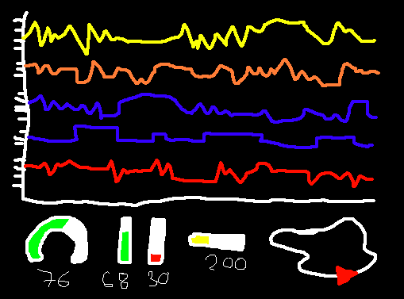

I am 21 and from Spain. Even though I was born in Barcelona, I have lived in Mallorca for most of my life.

As some family members and close friends were commercial pilots, I was interested in planes from a young age. I always knew that I wanted to work as a pilot but as the years progressed I started liking the avionics-side of aircraft just as much as the plane itself. This liking for single-use software sparked a potential interest in Computer Science.

When I was 15 I moved to the UK for sixth form (college). There I met a bunch of cool people and really enjoyed my time. It changed my outlook on some aspects of life and got me into cool things like music, football and going for walks.

During my years I was also introduced to Linux (Arch in particular), ThinkPads (and how cool toying with computers is) and Python, which I ended up using on my Computer Science Project; making a 2D Air Traffic Control game.

For my last year of college I also did an Extended Project Qualification - I chose to do on the construction of an 8bit CPU, based on the book Digital Computer Electronics by A. Malvino. It further consolidated my admiration for hardware/systems/real life projects within the Computer Science field.

Once I finished college I got into Loughborough University, studying Computer Science and Business Management (BSc) - I am about to finish (Summer 2020). During my time there I was part of two societies, one of them being a student to student listening service which really opened my eyes to the importance of being open mental health.

The other society was a Formula Student, a university team competing internationally against other universities to build and race a single seat race car. I spent my 3 years in the team, and worked on improving the steering wheel display, making partnerships, generating business reports, upgrading the sensor's communication network, and creating a realtime critical telemetry system and a bespoke cross-platform telemetry visualization software.
That's about it really